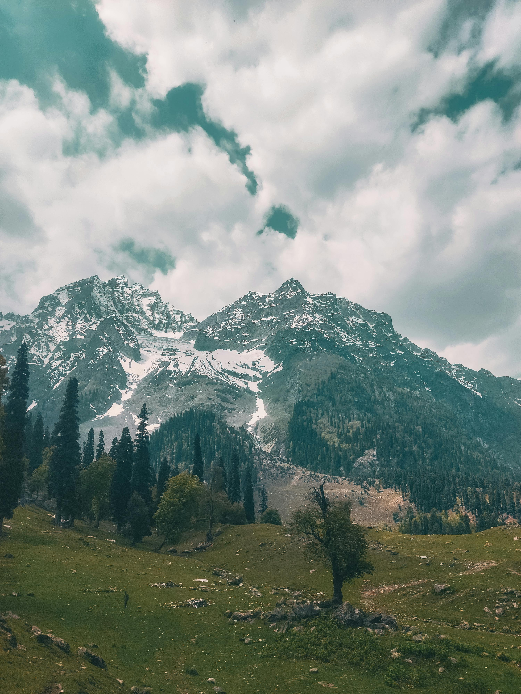
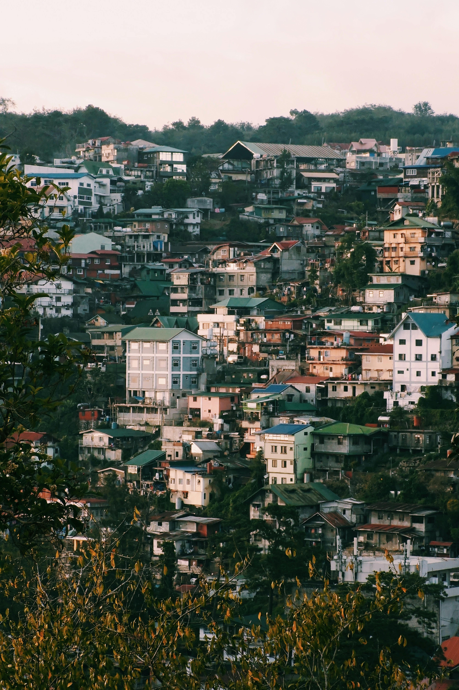

Best Places in INDIA

Taj Mahal
The Taj Mahal, an iconic symbol of love, stands majestically on the banks of the Yamuna River. Built by Emperor Shah Jahan in memory of his beloved wife, its white marble beauty epitomizes eternal love's strife.

Victoria Memorial
The Victoria Memorial in Kolkata, built from 1906 to 1921, is a majestic fusion of British and Mughal architecture, honoring Queen Victoria with a museum housing colonial artifacts, attracting global admiration.

Kashmir
Kashmir, renowned for its scenic landscapes, has been a longstanding point of contention between India and Pakistan, marred by territorial disputes and ongoing tensions, overshadowing its natural beauty.
